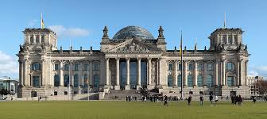

Berlin, Germany’s capital, dates to the 13th century. Reminders of the city's turbulent 20th-century history include its Holocaust memorial and the Berlin Wall's graffitied remains. Divided during the Cold War, its 18th-century Brandenburg Gate has become a symbol of reunification. The city's also known for its art scene and modern landmarks like the gold-colored, swoop-roofed Berliner Philharmonie, built in 1963.
 The Reichstag is a historic government building in Berlin which houses the Bundestag, the lower house of Germany's parliament. The Reichstag was constructed to house the Imperial Diet of the German Empire. It was opened in 1894 and housed the Diet until 1933, when it was set on fire. In World War II, during the Battle of Berlin, the building was severely damaged by the Soviet Red Army. After the war, the building fell into disuse; the parliament of the German Democratic Republic met in the Palast der Republik in East Berlin, while the parliament of the Federal Republic of Germany met in the Bundeshaus in Bonn. Theruined building was made safe against the elements and partially refurbished in the 1960s, but no attempt at full restoration was made until after German reunification in 1990, when it underwent a reconstruction led by architect Norman Foster. After its completion in 1999, it once again became the meeting place of the German parliament: the contemporary Bundestag